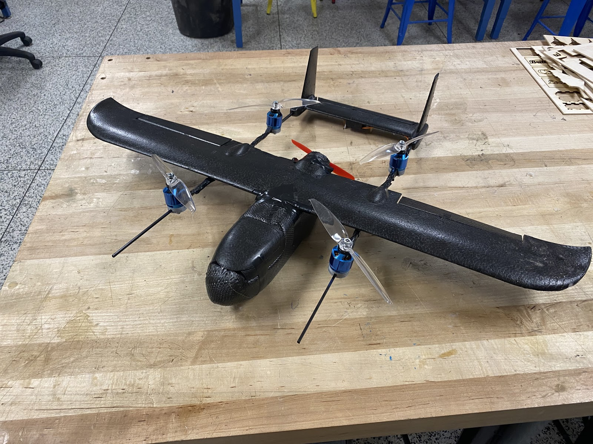
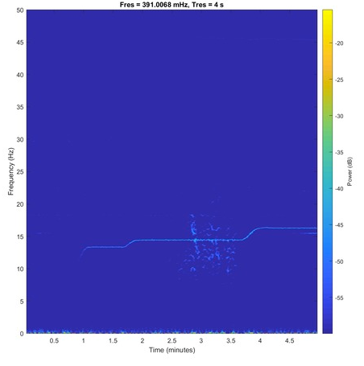

Hot Spot Drones
Autonomous Vertical Take Off and Landing (VTOL) Vehicle for Firefirghter Information Gathering

Summary:
I am working on a project to create a small VTOL drone to autonomously gather information for firefighters.
Right now, firefighters often show up to a fire woefully unprepared to put it out because they don't know
enough about the fire before they arrive. How large is the fire? How hot is it? Is it on the roof/is it safe to go in?
Are there dangerous chemicals on scene? Our vehicle will provide answers to all of these questions (and more!) before
the firefighters arrive on scene thus saving them invaluable time and providing them with information to safely put out the fire.
Group: Grand Challenges, Georgia Institute of Technology
Date: Fall 2018 - Current
HackGT Project: TremBULL

Summary:
I worked in a group with 3 others to develop a new method for identifying specific changes in frequency on a spectrogram.
NSIN, a government contracter, needed to new way to analyze their spectrograms to find specific changes in frequency, so our group developed
two methods to identify the desired frequency changes. Our first method uses computer vision to find the changes while the other method
approximates the signal as a multivariable function and identifies the sections of the function that we want. The project can be found on
Devpost here.
Awards: 1st Place Overall, HackGT (~200 submissions). NSIN Siesmic Data Award.
Group: TremBULL, Georgia Institute of Technology
Date: Fall 2019